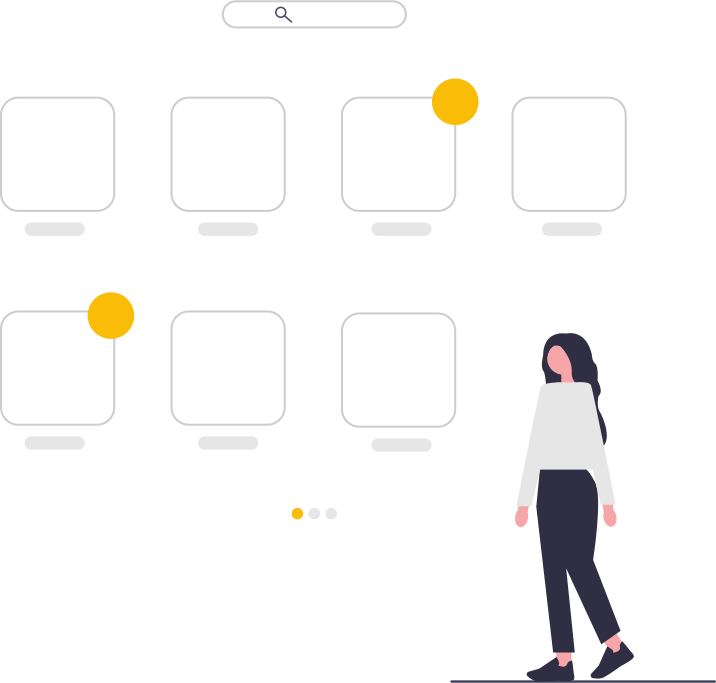
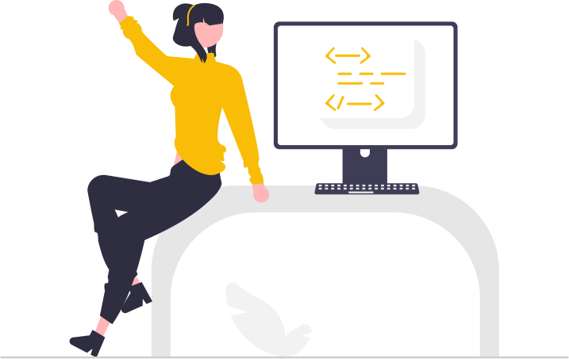
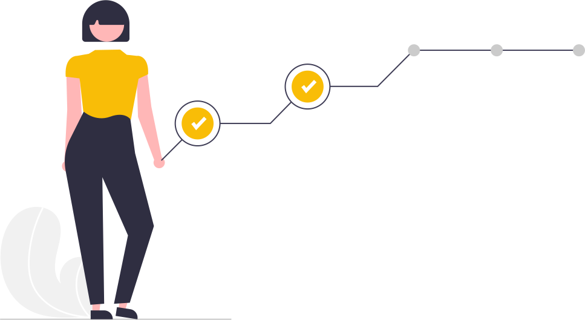
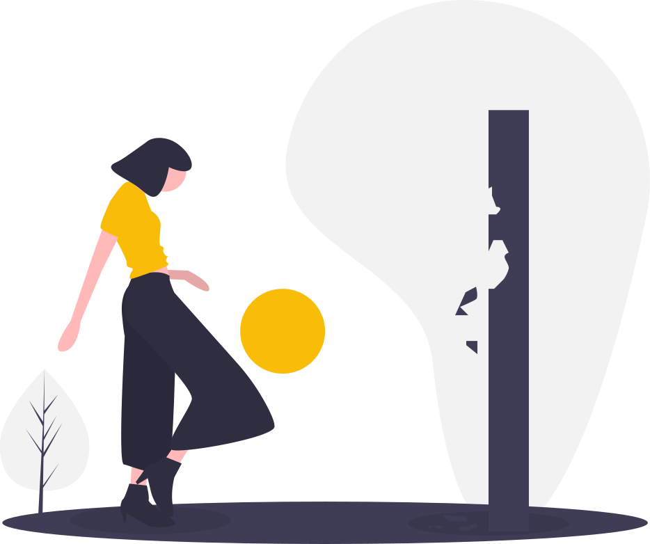

NHS RPySOC 2024
Nov 22, 2024
Work on great open source code, together, publicly, across the system
waiting list modelsR programming


| Data | |||
| Same |
Different |
||
| Analysis | Same | Reproducible | Replicable |
| Different | Robust | Reusable | |
“I think the reusability point is crucial, and perhaps the most important part of RAP”
“Reproducible generally falls on the ‘covering your backside’ side of things for me”
“Maybe ‘RAP’ should really be ‘RRRAP’ (reproducible, reusable and replicable)”
“Reduce, reuse, recycle works well in this context: reduce reinventing the wheel, reuse other people’s code, recycle your code to use it again or let other’s use it”
“Reusing code is a bit of a psychological shift. When you write something yourself, you know where each step came from and how it fits into what you’re trying to do.”
“In a resource constrained world these could be in direct conflict. Do you spend the time ensuring the results are replicable, or do you sacrifice some of that by making it more reusable?”
“I don’t know what code has already been developed in my team - never mind in different organisations!”
